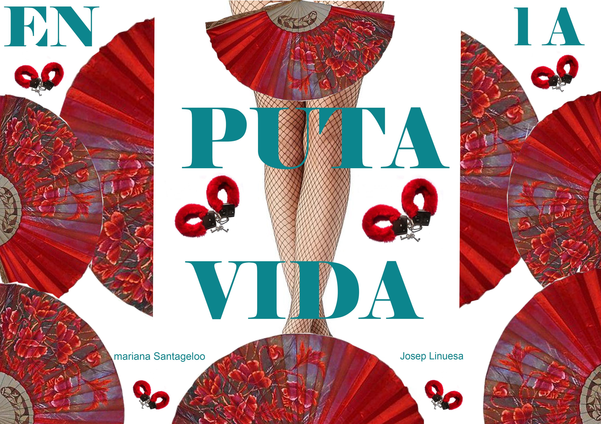
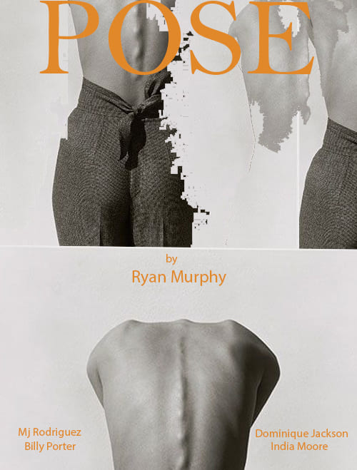
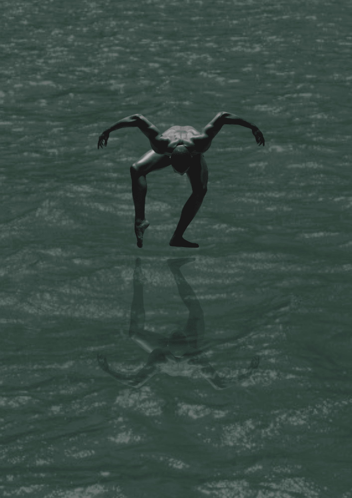
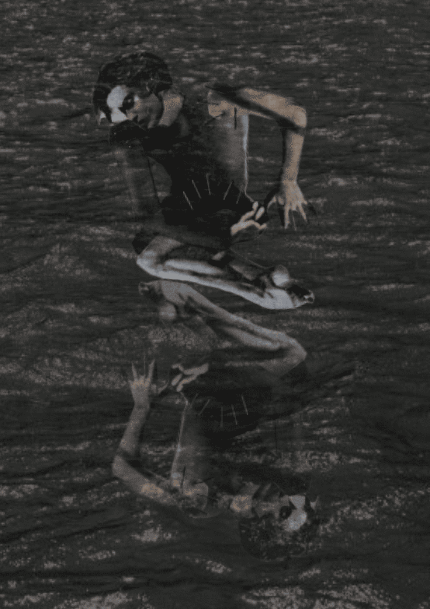

Otros Proyectos
Proceso creativo para material gráfico inspirado en la película La Puta Vida
Este proyecto se desarrolló en el marco de la materia Proyecto Visual, donde abordamos el cruce entre lenguaje cinematográfico y diseño gráfico.
Tomando como punto de partida la película La Puta Vida, me propuse reinterpretar su universo visual y temático a través de una serie de piezas gráficas, entre ellas un afiche principal.
Proceso creativo para material gráfico inspirado en la serie Pose
 Este proyecto se desarrolló en el marco de la materia Proyecto Visual, tomando como eje la serie Pose, un relato visualmente poderoso que retrata la escena ballroom de Nueva York en los años 80 y 90.
A partir de su estética vibrante, su carga emocional y su fuerte contenido social, construí una propuesta gráfica que busca reflejar el espíritu de resistencia, comunidad y expresión identitaria que atraviesa la serie.
Narciso - Fotomontaje 1:Fragmentos de identidad
 Inspirado en la película Memento y el mito de Narciso, este primer fotomontaje representa la fragmentación de la memoria y del yo.
La imagen construye una escena donde el sujeto parece buscarse en partes, reflejando una identidad quebrada y en reconstrucción.
La repetición de elementos visuales simboliza el intento constante de reconocerse, como si se mirara en un espejo roto.
Narciso - Fotomontaje 2:Reflejo obsesivo
 n esta segunda pieza, la narrativa se centra en la obsesión con la propia imagen, conectando directamente con el mito de Narciso.
El protagonista se enfrenta a su reflejo, atrapado en una contemplación interminable que lo aleja del mundo real.
La composición visual refuerza esta tensión entre percepción y realidad, planteando una mirada crítica sobre el ego y la construcción de la identidad.